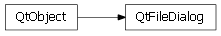

Bases: enaml.core.messenger.Messenger
A dialog widget that allows the user to open and save files and directories.
The title to use for the dialog.
The mode of the dialog.
The selected path in the dialog. This value will be used to set the initial working directory and file, as appropriate, when the dialog is opened. It will aslo be updated when the dialog is closed and accepted.
The list of selected paths in the dialog. It will be updated when the dialog is closed and accepted. It is output only and is only applicable for the open_files mode.
The string filters used to restrict the user’s selections.
The selected filter from the list of filters. This value will be used as the initial working filter when the dialog is opened. It will also be updated when the dialog is closed and accepted.
Whether to use a platform native dialog, when available.
An enum indicating if the dialog was accepted or rejected by the user. It will be updated when the dialog is closed. This value is output only.
An optional callback which will be invoked when the dialog is closed. This is a convenience to make it easier to handle the non-blocking behavior of the dialog. The callback must accept a single argument, which will be the dialog instance.
An event fired when the dialog is closed. The dialog state will be updated before this event is fired.
Whether to destroy the dialog widget on close. The default is True since dialogs are typically used in a transitory fashion. If this value is set to True, the dialog will be destroyed on the completion of the closed event.
alias of __NoInterface__

Bases: enaml.qt.qt_object.QtObject
A Qt implementation of an Enaml FileDialog.